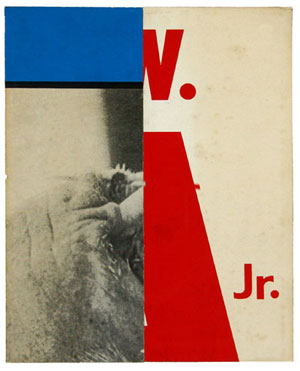
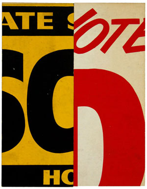
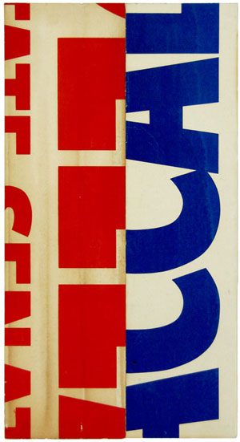

PARTIAL LETTERFORMS
SHOP EATS ITSELF
LOCK UPS
Poster printers such as Globe commonly reused materials and incorporated them back into the shop as functional objects. This study explores a set of posters that were trimmed down and repurposed as shelf dividers that were used to keep large wood type neatly stacked and easy to sort and grab.



All content © Joe Galbreath